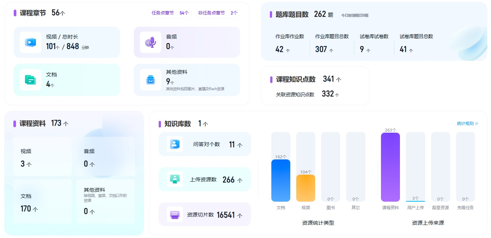

2025秋 · CHEM20013.02 · 张丹维、孙兴文、李志铭
来源：复旦教务系统教学大纲，本轮使用已授权账号下载。原始正文与考核信息；去除联系方式和网页脚本，内嵌图片按原字节去重保存。
本课程帮助学生扎实掌握有机化学的核心知识和基础理论，从有机化合物的命名、异构现象、构造、构型与构象、立体化学等基础概念入手，逐步深入学习各类有机化合物的结构与反应性质。通过深入分析反应机理，理解有机化学反应的本质，掌握反应的化学选择性、区域选择性和立体选择性等关键概念，培养学生科学思维能力以及分析和解决问题的能力。
This comprehensive course provides an in-depth exploration of the core knowledge and fundamental theories in organic chemistry. It begins with essential concepts, including the nomenclature of organic compounds, isomerism, molecular construction, configuration, and conformation, as well as the principles of stereochemistry. Building upon these foundations, the course systematically examines the structures and properties of various organic compounds. Through detailed analysis of reaction mechanisms, students will gain a profound understanding of the fundamental principles underlying organic reactions. Furthermore, they will develop expertise in critical concepts such as chemoselectivity, regioselectivity, and stereoselectivity. This course not only enhances scientific thinking skills but also cultivates the ability to analyze and solve complex organic chemistry problems, providing a solid foundation for advanced studies in chemistry and related fields.
扎实掌握有机化学基础知识，形成化学思维习惯，具备分析和解决问题的能力，实现学以致用、触类旁通，为后续高阶学习打牢基础。
本课程线下授课，依托超星学习通提供在线学习资源和AI助教。作业完成情况纳入平时成绩。

本课程具体教学内容和安排可能根据实际授课情况有所变化，每次课前通过学习通“通知”模块安排具体预习和授课内容，请在课前关注。
每周安排作业一次，作业情况纳入平时成绩，期中考试时间初步定于第9教学周，期末考试按统一安排时间进行。
|
周次 |
重点学习内容 |
|
1 |
本学期学习安排 第一章绪论： 1.1 有机化学的研究对象 1.2 有机化合物的结构 1.2 有机化合物的结构：轨道杂化理论 1.3 有机官能团、反应类型及反应机理 |
|
2 |
第二章 有机化合物的IUPAC命名法 2.1 普通命名法 2.2 系统命名法 (IUPAC命名法)：以烷烃为例 2.3 环烷烃的命名：单环、桥环和螺环化合物 第三章 立体化学 3.1 直链烷烃的构象及影响构象稳定性的因素 |
|
3 |
第三章 立体化学 3.2 环烷烃的稳定构象 3.3 手性及手性化合物 3.4 手性化合物的获取途径 |
|
4 |
第四章 烷烃：自由基取代反应 4.1 烷烃自由基取代机理 4.2 影响自由基取代反应的因素 4.3 小环烷烃的化学性质 |
|
5 |
第六章 卤代烃 饱和碳原子上的亲核取代反应 β-消除反应 6.1 卤代烃的结构和命名 6.2 卤代烃的亲核取代反应 6.3 卤代烃的消除反应 6.4 取代与消除反应的竞争及卤代烃的其他性质 |
|
6 |
第六章 卤代烃 饱和碳原子上的亲核取代反应 β-消除反应 6.5 金属有机化合物的制备及其性质 6.6 有机合成初步 第八章 烯烃 炔烃 加成反应 (一) 8.1 烯烃和炔烃的命名 8.2 烯烃的氧化还原反应 |
|
7 |
第八章 烯烃 炔烃 加成反应 (一) 8.3 烯烃的亲电加成反应 8.4 烯烃的其他性质：卡宾和烯丙位的性质 8.5炔烃的结构、制备及其性质 |
|
8 |
第七章 醇和醚 7.1 醇的结构、分类和命名 7.2 醇的制备方法 7.3 醇的化学性质：取代与消除反应 |
|
9 |
第七章 醇和醚 7.3 醇的性质：醇的氧化反应 7.4 多元醇的制备和性质 7.5 醚的结构、命名和性质 |
|
10 |
第九章 共轭烯烃 周环反应 9.1 共振论和共轭烯烃的性质：共振论、共轭烯烃的亲电加成 9.2 周环反应的基本原理及分类 9.3 电环化反应 9.4 环加成反应：双烯合成 |
|
11 |
第九章 共轭烯烃 周环反应 9.4 环加成反应：偶极环加成 9.5 σ-迁移反应 第十章 醛和酮 加成反应 (二) 10.1 醛酮的命名、制备及结构性质分析 10.2 醛酮的亲核加成反应 |
|
12 |
第十章 醛和酮 加成反应 (二) 10.2 醛酮的亲核加成反应 1）官能团保护及在合成中的应用 2）醛酮与胺类化合物的缩合 10.3 α,β-不饱和醛酮的加成反应 10.4 醛酮的氧化还原反应 |
|
13 |
第十章 醛和酮 加成反应 (二) 10.5 Wittig试剂 10.6 羰基（吸电子基）α-位的性质 第十一章 羧酸 11.1 羧酸的酸性和影响酸性的因素 11.2 羧酸的制备方法 11.3 羧酸的化学性质 |
|
14 |
第十二章 羧酸衍生物 酰基碳上的亲核取代反应 12.1 羧酸衍生物的命名与性质分析 12.2 羧酸衍生物的性质 1）羧酸衍生物的互相转化 2）羧酸衍生物制备酮 3）羧酸衍生物的还原反应 12.3 腈类化合物的化学性质 第十五章 苯 芳香亲电取代反应 15.1 苯的结构、命名与芳香性 15.2 苯环上的加成反应和侧链上的反应 |
|
15 |
第十五章 苯 芳香亲电取代反应 15.3 苯的芳香亲电取代反应 1）卤代、硝化、磺化、F-C反应及类F-C反应 2）取代基的定位效应 3）合成应用 15.4 多环芳烃及其化学性质 1）多苯代脂烃：命名及性质 2）稠环芳烃（萘、蒽、菲）的性质 |
|
16 |
第十五章 苯 芳香亲电取代反应 15.4 多环芳烃及其化学性质：Haworth合成法 15.5 非苯芳烃及其性质 1）Hückel规则 2）非苯芳烃的性质 本学期部分重点知识内容回顾 |
Neil E. Schore著，席振峰、罗三中等译，《有机化学学习指导与解题攻略》，化学工业出版社 (2022)
| 项目 | 比例 | 评定说明 |
|---|---|---|
| 作业/实验/实践Assignment | 15.0% | |
| 期中考试Midterm Examination | 25.0% | |
| 期末考试Final Examination：闭卷 | 60.0% |